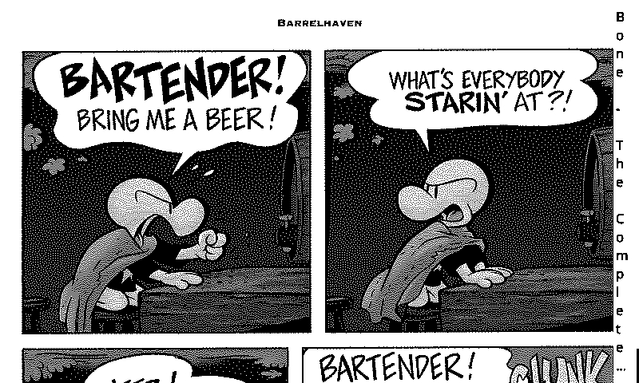
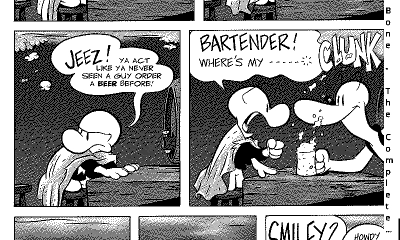
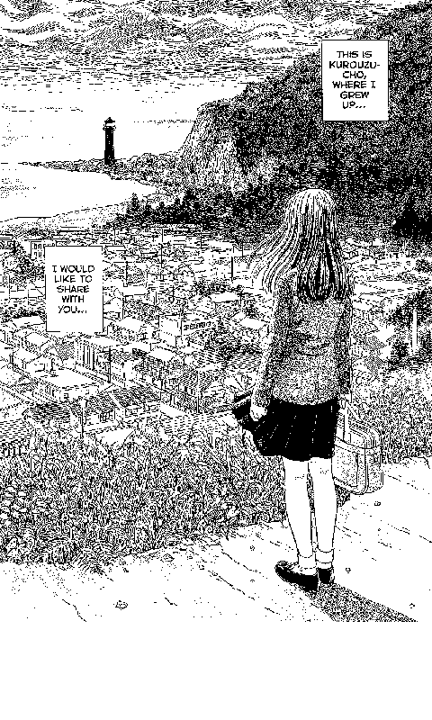
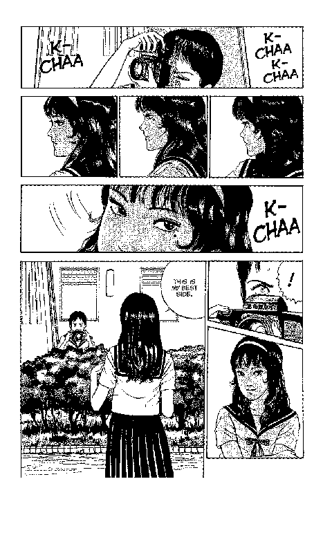
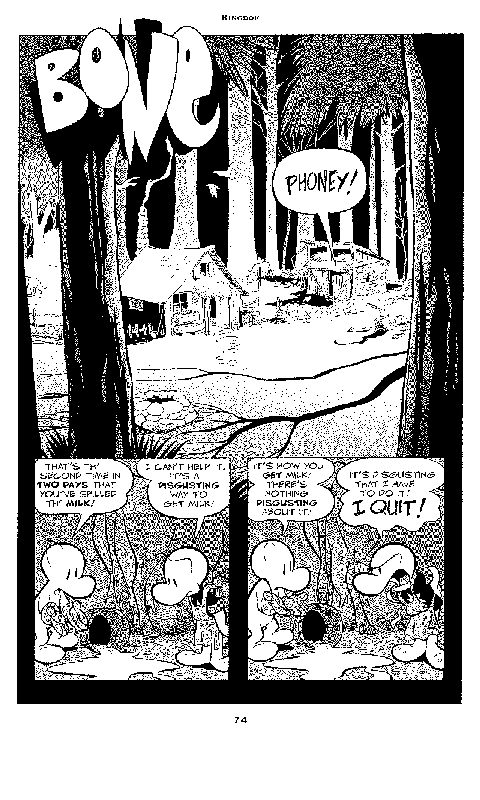

A manga page is taller than the panel. KomaOS gives you both answers, switchable from the manga menu without leaving your place.
A tall page is cut into three overlapping strips off-device, so no panel is ever cut in half across a page turn. Each strip fills the screen 1:1 in landscape — no resampling, no re-dithering, full detail.


The same three strips reassembled on the device, overlap cropped so nothing is drawn twice. Necessarily softer — it re-dithers art that was already dithered — so it works best for finding your place on a spread rather than for reading.



Tap any screenshot to view it full size. All shots are straight off the device at panel resolution.
Everything CrossPoint Reader does, plus the manga layer it was missing.
Split and full-page modes, LTR/RTL or direction from the file, quick page jump, per-volume bookmarks, chapter selection.
One press from the page: jump, bookmark, view mode, orientation, screenshot, manga settings.
Reading position, bookmarks and slice offset are remembered per book, not globally.
Bottom, top, or a column down the right edge for landscape reading — glyphs turned to match pre-rotated artwork.
A home screen laid out as manga panels: three covers, reading stats, inked menu rows.
EPUB 2/3, .txt, .bmp, hyphenation, footnotes, StarDict lookups, focus reading, KOReader sync.
Wi-Fi transfer, OPDS browsing, Calibre wireless and OTA updates.
MIT licensed, full upstream history preserved, fixes merged from CrossPoint Reader regularly.
The ESP32-C3 cannot decode a full-resolution JPEG per page turn inside a 380 KB RAM budget. So KomaOS does not try — the expensive work happens on a real computer.
| Convert | FlipNzb watches your indexers and converts volumes to XTC in place, or xtcjs for one-off files in the browser. |
| Store | XTC / XTCH — 1-bit or 2-bit grayscale, already at panel resolution, already dithered. |
| Read | A page turn is a blit. No decode, no reflow, no allocation spike. |
| Geometry | The converter records the split geometry into the file, so the reader never guesses the overlap or rotation when reassembling a full page. |
One firmware binary covers both devices; the hardware is detected at runtime.
| MCU | ESP32-C3, single-core RISC-V @ 160 MHz |
| RAM | ~380 KB usable, no PSRAM |
| Flash | 16 MB |
| Display | 800×480 e-ink (X4) / 792×528 (X3), 48 KB single framebuffer |
| Storage | SD card, with an on-card cache under /.komaos/ |
Coming from CrossPoint Reader? Rename /.crosspoint/ to
/.komaos/ on the card before first boot and your settings, progress, bookmarks and
caches carry over. Skip it and nothing breaks — you just start fresh.
firmware.bin from
Releases and choose
Custom .bin.pip install esptool
esptool --chip esp32c3 --port /dev/ttyACM0 write-flash 0x0 firmware.bingit clone --recursive https://github.com/0xKnowles/KomaOS.git
cd KomaOS
pio run # build
pio run -t upload # build and flash
pio device monitor # serial logRequires PlatformIO. Reverting to stock firmware uses the same flash tool.